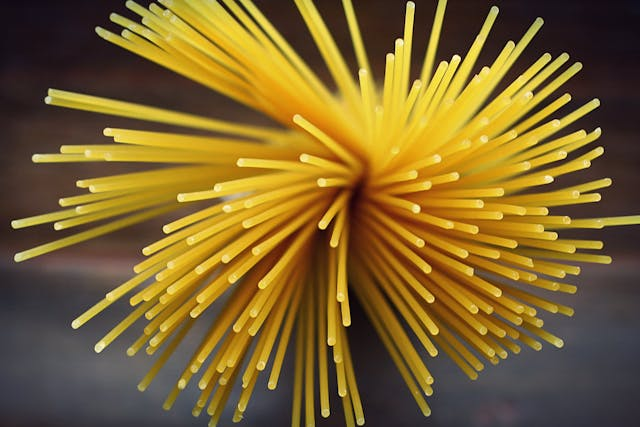
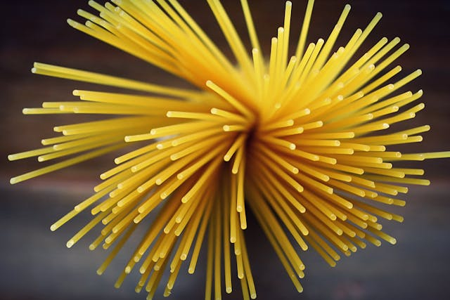
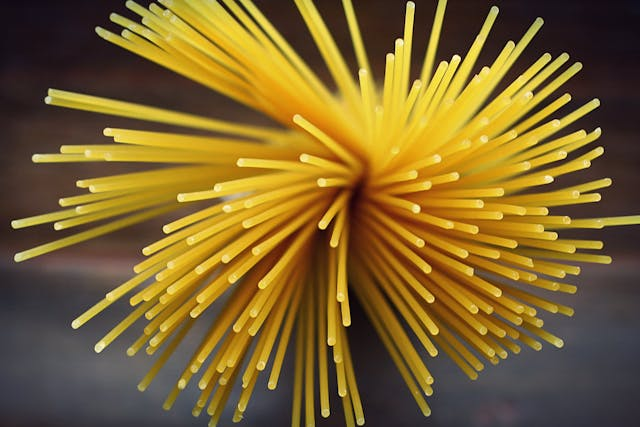

CARBOHYDRATES
Carbohydrates are energy-giving food. During respiration, carbohydrates are oxidized to give energy and heat
- yam
- rice
- maize
- grain
- potatoes
 


Carbohydrates are energy-giving food. During respiration, carbohydrates are oxidized to give energy and heat

Just like carbohydrates, fats and oils are also energy-giving food. Fats are solid at room temperature, while oils are liquid at room temperature.


Vitamins are an essential part of our immune system as it helps us to regulate and maintain the healthy process of our body.


crucial for bodybuilding, can be sourced from meat, legumes, and dairy products


Minerals represent various functions like building blocks for our muscles, bones, and teeth, carrying oxygen in our body, keep fluids


Fiber is defined as a type of carbohydrate that is not absorbed by human being


Water is an essential part of our food. Human is essentially 80% water